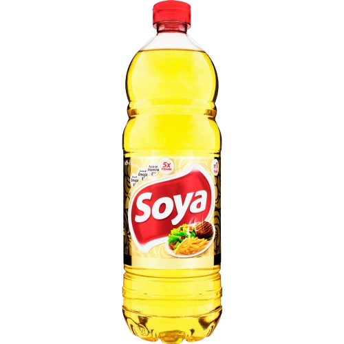
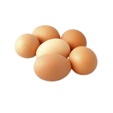
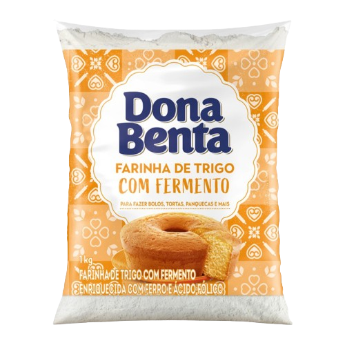

Bolo De Cenoura ü•ï
By: Tudo Gostoso Confira essa clássica receita de bolo de cenoura simples e fácil, nossa campeã de acessos! O bolo de cenoura é um doce muito popular em nosso país, especialmente no café da manhã e no lanche da tarde. Com sua cobertura de chocolate irresistível e seu interior macio e úmido, ela é uma receita que conquista o coração de todos! Veja com a gente como fazer bolo de cenoura, uma receita prática, preparada com auxílio do liquidificador e perfeita para degustar com um cafezinho!
Ingredientes 8
Massa:
-

1/2 xícara (chá) de óleo
-

4 ovos
-

2 e 1/2 xícaras (chá) de farinha de trigo
-
3 cenouras médias raladas
-

2 xícaras (chá) de açúcar
-
1 colher (sopa) de fermento em pó